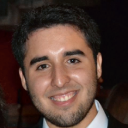

Curriculum Vitae

Valentín Marchant
Linkedin
Resumen
Ingeniero Civil Mecánico de la Pontificia Universidad Católica de Chile, con dominio avanzado en inglés.
Cuento con experiencia en el diseño mecánico de estructuras de acero y en los distintos procesos de manufactura presentes en la industria, además de experiencia creando modelos tridimensionales y planos en softwares de la industria. También cuento con experiencia en el funcionamiento de energías sustentables y en la evaluación de sistemas de refrigeración y climatización.
Por otra parte, durante el periodo universitario desarrollé excelentes habilidades comunicativas y de trabajo en equipo, además de caracterizarme por ser alguien estratégico y resiliente a la hora de trabajar.
Formación
- Enseñanza Media y Básica: Colegio Concepción San Pedro (2013)
- Estudios Pre Grado: College Ciencias Naturales y Matemáticas, Pontificia Universidad Católica de Chile (2016)
- Intercambio Académico: University of Bergen, Noruega (2019)
- Estudios Pre Grado: Ingeniero Civil Mecánico, Pontificia Universidad Católica de Chile (2022)
Experiencia Laboral
- Práctica profesional: C3D Open Innovation
- Cotización de la manufactura de carro limpiador de piscina para empresa Crystal Lagoons
- Creación de diseño digital de vehículo eléctrico para empresa Algramo
- Trabajo de Título: ME Elecmetal
- Gestionar rediseño y manufactura de dispositivo para escaneo de equipos mineros "Quick Scan Crusher"
Cursos y Voluntariados
- Co-fundador y ex-delegado de la Selección de Balonmano de Ingeniería UC
- Ex-voluntario activo del voluntariado Proyecta UC de la Pontificia Universidad Católica, con distintos cargos dentro del Proyecto
- Curso de Introducción al Diseño Web en Academia Desafío Latam
- Integrante del equipo de balonmano Blacket Varones
Herramientas Tecnológicas
- Autodesk Inventor (nivel avanzado)
- Autodesk Fusion 360 (nivel avanzado)
- Python (nivel avanzado)
- Microsoft Excel (nivel intermedio)
- Arduino (nivel intermedio)
- Adobe After Effects (nivel avanzado)
- Adobe Photoshop (nivel avanzado)
Idiomas
- Español nativo
- Inglés avanzado oral/escrito (TOEFL iBT, Puntaje: 93)
Portafolio